2.3. Directory Hotlist
Content
- 1. Introduction
-
- 1.1. Definition
- 1.2. Overview
- 2. Directory Hotlist Usage
-
- 2.1. How to access Directory Hotlist
- 2.2. Another way to access Directory Hotlist
- 2.3. How to configure the Directory Hotlist
- 2.4. Other ways to access the configuration of the Directory Hotlist
- 2.5. How to add a directory to the Directory Hotlist
- 2.6. Personalize a newly added entry in the Directory Hotlist
- 2.7. Setting the target as well
- 2.8. Define the sort order after directory change
- 2.9. Helper with path and target definition
- 2.10. Changing the order of the entries
- 2.11. Using "cut" and "paste" to re-arrange order
- 2.12. Organizing entries in a tree-view
- 2.13. Adding separators to help in clarity
- 2.14. Sorting the entries
- 3. "Expert" functions
-
- 3.1. Backup the Directory Hotlist
- 3.2. Restore a backup of a Directory Hotlist
- 3.3. Exporting/Importing a Directory Hotlist (or part of it)
- 3.4. Exporting/Importing to/from Total Commander
- 3.5. Scan the Directory Hotlist to find missing directories
- 3.6. Adding more than one directory, at the time, to the Hotlist
- 3.7. No switch on inactive frame even if target is configured
- 3.8. Directly configure an entry from popup menu
- 3.9. Show complete path in popup menu
- 3.10. Keep only environment variables that look like a directory
- 4. Other functions
1. Introduction
Introduction to Directory Hotlist
1.1. Definition
A Directory Hotlist is a usable list of the directories you use most often.
It creates nothing on the disk, it's simply a list of shortcuts, to quickly access the "hot" directories.
By using them to jump to a directory, you won't play the monkey jumping continuously from one branch to another in the tree.
Also, for the important directories you don't want to forget, it's good to have an area with shortcuts pointing to them.
Even if you don't go into them often, you'll save time when you need them, because you won't have to search for them.
1.2. Overview
From the main panel, you may see the Directory Hotlist as a popup menu.
Click on one of the entries and it will immediately bring you to the associated, defined directory.
You won't have to browse from folder to folder to reach that target.
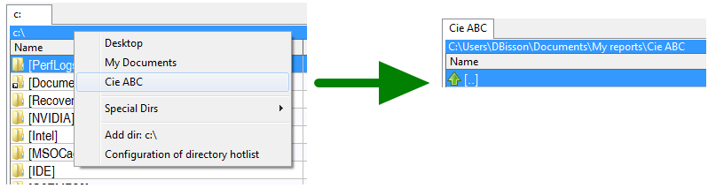
2. Directory Hotlist Usage
The following are common actions related with the Hotlist
2.1. How to access Directory Hotlist
From the menu bar you select "Commands" and then "Directory Hotlist".
It appears like a popup menu where you click the item and it brings you to the directory defined by the entry you've set.
2.2. Another way to access the Directory Hotlist
You may click the button with a star on it on top right of the active file panel.
You may also set a toolbar button associated with the internal command "cm_dirhotlist".
You may double click on the title bar of the active frame to make it popup, which is the one the author of these lines prefers.
2.3. How to configure the Directory Hotlist
From the menu bar you may select "Configuration" and then "Directory Hotlist"
The tree you see there will show the same thing as what you will see in your popup Directory Hotlist from the main panel.
But instead of seeing it on the form of a popup menu, you see it as a tree with many functions to edit, move, etc. as you can see in this help document.
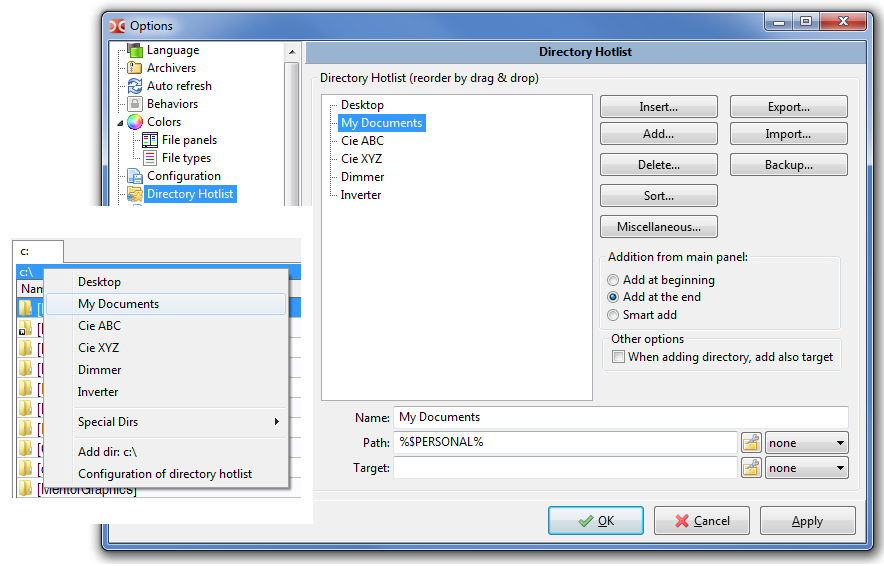
2.4. Other ways to access the configuration of the Directory Hotlist
At the bottom end of the Directory Hotlist popup menu, there is always a menu shortcut to bring you to the Directory Hotlist configuration screen.
You may add a tool button with internal command cm_ConfigDirHotList.
2.5. How to add a directory to the Directory Hotlist
The simplest way is this:
- 1. In the active panel, enter the directory you want to add.
- 2. Then make appear the Directory Hotlist (by accessing menu "Commands" - Directory Hotlist for example)
- 3. The click "Add dir: your_dir_name".
- 4. Once you've done that, it shows you the Directory Hotlist configuration screen confirming you the directory has been added.
- 5. Focus will be on it to help you see which one it is.
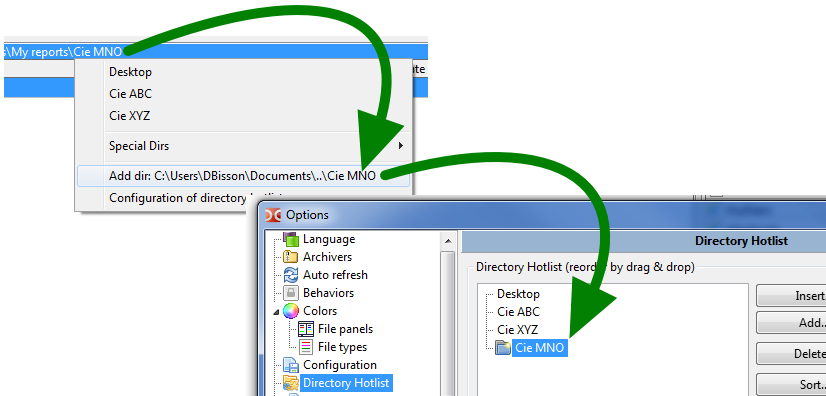
Later, we'll see there are many more ways to add an entry to the Directory Hotlist.
2.6. Personalize the new added entry in the Directory Hotlist
By default, when adding a directory to the Directory Hotlist, the entry name will be the name of the last directory name.
But if you want, you can rename it. Simply select the field "Name" and then type an easy remembered reference name.
In this example, the folder name is "doc" but the name given to the entry is "Documentation"
This is also how you will see it in the Directory Hotlist popup menu.
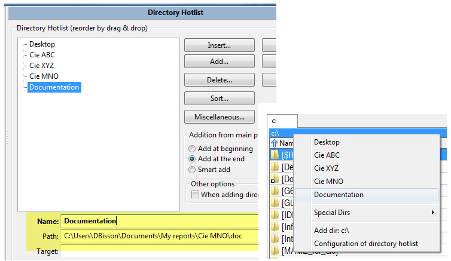
2.7. Setting the target as well
Not only you can add the directory to switch to, but you may also select the "Target Directory", the one that will be in the inactive panel when in the main window.
So for common repetitive actions over time when you need to copy stuff from directory "A" to directory "B", from which ever folder you might be before, you will simply select it from the Directory Hotlist menu item and it will set both side to the defined directories, ready for the action.
To define the target directory to be when selecting the Directory Hotlist entry, simply set the field "Target".
The following example shows the "Directory A" with "Directory B" as target as suggested here.
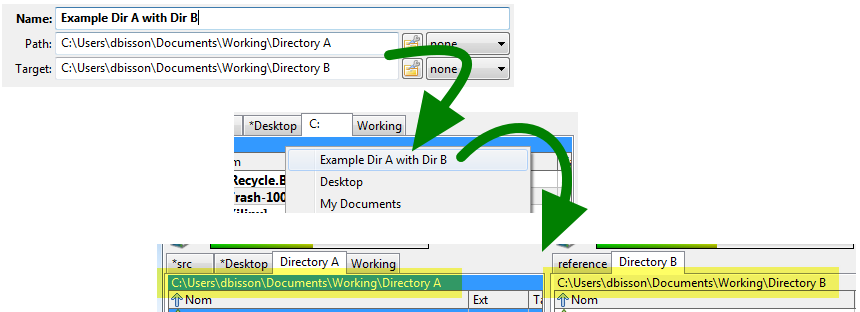
2.8. Define the sort order after directory change
At the end of the "Path" and "Target" fields for an entry, you have drop box.
Use this drop box when you want to predetermine what needs to be the sort order of the panel when selecting the Directory Hotlist entry.
So if you set it to "Date 9-0", when you will use the Directory Hotlist, it will not only move the active path to the one defined, but no matter how the panel was sorted before, it will sort it in reverse chronological order.
Let this field to "none" if you don't want selecting a new path from the Directory Hotlist change anything.
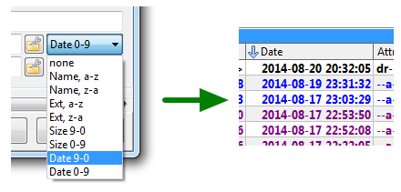
2.9. Helper with path and target definition
Certainly you may work with absolute path and it will work fine on THIS machine.
But let's suppose you have Double Commander with numerous other tools on your Swiss-knife USB memory stick.
You may want to have relative paths for portable installations.
I mean here relative to the Double Commander path, for example.
So you may have this path "E:\PortableApps\Notepad++Portable\Data\Config\" and it works fine.
But you may also make it relative to current "Double Commander" current path and have this "%commander_path%\..\..\Notepad++Portable\Data\Config\"
To help you to figure what to type (in other words how many "..\" to use!), on right side of the "path" and "target" field, you have a little button that brings up a popup menu with various related little tools to edit and arrange the path the way you wish.
But this is just one of the possible use of that button.
Here is a complete summary of what you'll find there:
- Use Double Commander special path - To point directly to the executable path, the configuration path, etc.
- Use Windows special folder (TC) - For Microsoft Windows flavor, will allow to point windows-related path, compatible with TC variable name
- Use other Windows special folder - Same as above but new one, not present in TC
- Use environment variable - Certainly some values are not really valid and useful there but for the ones that might be, let's use them!
- Use hotdir path - This is pure versatility: you may add a Directory Hotlist... from the Directory Hotlist!
- Make relative to... - Same thing for each of the above BUT instead of straight ADDING the path, it will make the current written one relative to the one you select.
- Make path absolute - To do the opposite: when you have a path relative, it will bring it to its absolute form.
- Add path from active frame - The path that will be added will be directly the one from the main panel, from the active frame.
- Add path from inactive frame - Same as above but as stated, from the inactive frame.
- Browse and use selected path - Will open a directory browser where you can select the directory you want, simply.
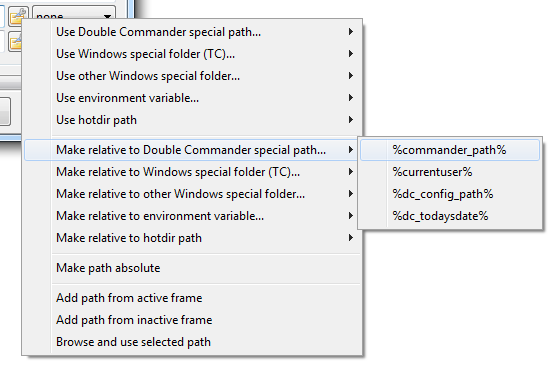
2.10. Changing the order of the entries
In time, the Directory Hotlist may grow longer and un-ordered.
You may re-arrange the order simply by dragging-and-dropping the selected entry to a new position that makes more sense to you.
By using the "CTRL" key on the keyboard, you may select and move more than one at the time as well.
2.11. Using "cut" and "paste" to also re-arrange order
If you have a very long list of directories, the drag-and-drop method might not be suitable because source and destination are too far apart.
If so, you may select the one you want to move, then right click on it and select "cut".
Then you scroll the list to see the target position you want to place the entry and you select the position.
Then you right click and select "Paste" to paste the entry you selected first.
By using the "CTRL" key, you may select more than one entry at the time to cut-and-paste.
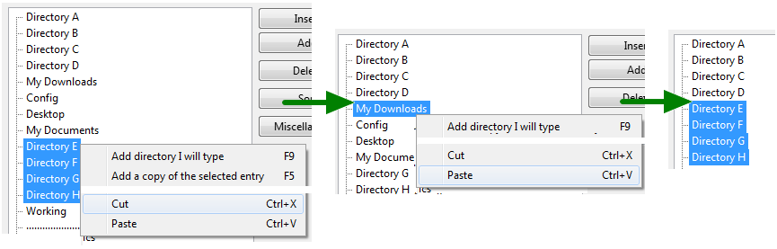
2.12. Organizing entries in tree
If you're a fan of Directory Hotlist, like the author of these lines, having a one-dimensional list of Directory Hotlist will not be enough!
So, Double Commander to the rescue. You may create and organize sub-menus in your Directory Hotlist.
More than that, you may have submenus inside another submenus.
This means you may really configure yourself a well organize Directory Hotlist.
To add a submenu, simply place the selection where you wish to have the submenu, right-click and select "Add a submenu".
It will create a submenu named "Submenu name" with inside one entry name "Hotdir name".
Obviously, with the fields below you may give a significant name to the submenu.
From there, you may add new entry, move other entries inside that new submenu, etc.
Please note you may move or cut-and-paste a submenu, which make your life simpler when rearranging your Directory Hotlist.

2.13. Adding separators to help in clarity
Having many entries one after the other is nice but by adding some separators to create categories may bring order to your listing.
So to add a separator, simply place the cursor where you want the separator, right click and do "Add a separator".
In the configuration Directory Hotlist tree, it will show you a line with dots but once in the main panel with the Directory Hotlist popup, you'll see a nice menu separator.
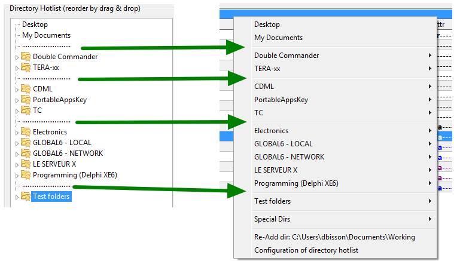
2.14. Sorting the entries
As described above, with the drag-and-drop and the cut-and-paste, you can certainly re-arrange the Directory Hotlist entries the way you wish.
But if you agree to work with alphabetical name, you may use the included sort functions.
The idea of the sort is simple: place the current selection where you want to sort and then select the sort function you want by pressing the "Sort..." button that will bring up a popup menu.
The five available choices gives you all the latitude you may wish on this matter:
- Single group of item(s) only - will sort the area next to the current selected item. By "area" it means the entries comprises between two separators, start of a menu or end of a menu.
- Current level of item(s) selected only - not only the area where the current selection is but also the siblings on the same branch. It will do the sort but respect the entries area so an item from a group will bot cross a separator you may have.
- Content of submenu(s) selected, no sublevel - Will sort the immediate "childs" of a submenu you may have selected but will not go into possible other submenus in it to sort them.
- Content of submenu(s) selected and all sublevels - Idem to previous mentioned one but this time will also sort all the submenus inside that branch.
- Everything, from A to Z! - Ahhh! The favorite of the author of these lines: like the name suggest it, will simply sort everything but still respecting the area of each so will not move item from a branch to another.
Like written earlier, any sort will not move an item to go over a separator.
Just to make sure you see the meaning of not crossing a separator when doing a sort, see the following example.
The "Root" folder will always remain above the other after the sort *because* there is a separator there.
The separators are really useful for this matter.
Not only it makes things more clear, it is useful as delimiter when doing sort!
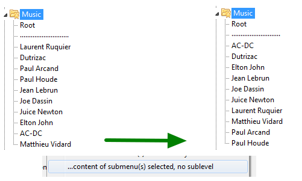
3. "Expert" functions
Here follows less frequent actions related with Directory Hotlist but still useful to know
3.1. Backup the Directory Hotlist
As your Directory Hotlist grows in quantity of directory shortcuts, you may want to backup it "just in case" an accident happens to don't lose these valuable links.
To do that, on right of configuration screen you have a button named "Backup".
Press on it and in the menu select "Save a backup of the current Directory Hotlist".
It will then save the current list into a file into a "Backup" folder present into the Double Commander defined config directory.
The number of entry saved will be written as with the resulting file name, which will include the date and time of the Directory Hotlist.
Please also note the extension of the file which is ".hotlist".
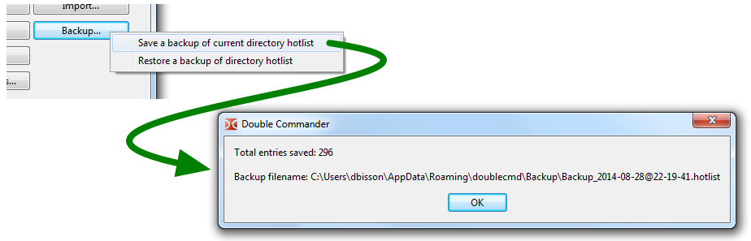
3.2. Restoring backup of a Directory Hotlist
Similar as above, you click on the same button named "Backup".
In the submenu select "Restore a backup of Directory Hotlist".
From the file requester that will appear, select the backup you want to restore.
When you restore a backup, it will first erase the current Directory Hotlist and then add the ones from the backup file.
If you just want to restore just certain entries from the backup file, you may do "Import" and point the backup file.
The system will then prompt you to indicate which entries from the backup file you want to restore.
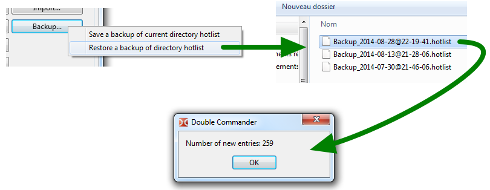
3.3. Exporting/Importing a Directory Hotlist (or part of it)
If you have more than a computer, or if you have a fellow accessing the same servers as you, you may want to be able to export your Directory Hotlist, or part of it, so on the other computer you'll have the same directory shortcuts without having to enter them one by one.
To do that, first click the button "Export" and then select "...to a Directory Hotlist file (.hotlist)".
It will then prompt you to enter the filename and file location of the export file you want to create.
Then you will be asked to select what you want to export.
You may export the whole tree or you may select the entries one by one.
You may select a whole submenu also by selecting the submenu name without having to select the entries inside.
Please use "CTRL" key on the keyboard while clicking to select the different entries you want to export.
Then, on the other computer, you will click the "Import" button and then select the menu item "from a Directory Hotlist file (.hotlist)".
From the file requester, point the file to import.
Similar as with the export, you may import the whole thing but you're also offered to select specific entries you want to import.
The entries you import will be added at the end of yours.
3.4. Exporting/Importing to/from Total Commander
Double Commander may also export/import Directory Hotlist to/from the one of Total Commander.
Let's suppose you want to import some entries from Total Commander, here is what to do.
From the Directory Hotlist configuration screen, click the "Import..." button and select "...from "wincmd.ini" of TC"
Then select in the file requester the location of the "wincmd.ini" file of your Total Commander.
If you don't know where is that file, in Total Commander, click the "Help" menu and then click "About Total Commander...".
The location of the .INI file will be written there.
Then will appear a tree with the directory entries that has been read from the Total Commander .ini file.
From that tree you may import ALL the entries or you may select them one by one, as you wish.
Please use "CTRL" key on the keyboard while clicking to select the different entries you want to import.
The entries you import will be added at the end of yours.
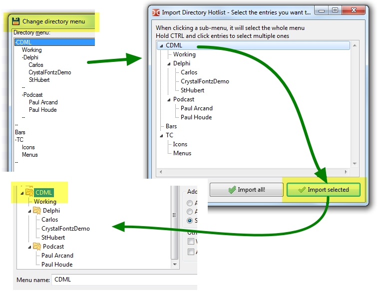
Then, as a reverse operation, you may export all or part of your Double Commander Directory Hotlist to the Total Commander's one.
To do that, click the "Export..." button and select one of the two possible exportations to Total Commander.
If you know what you're doing and accept to replace the whole entries of Total Commander's Directory Hotlist, you may select "to a "wincmd.ini" of TC (erase existing)".
And again here, you may select if you want to export the whole thing or just select the ones you want to export.
Please use "CTRL" key on the keyboard while clicking to select the different entries you want to export.
Maybe you should have Total Commander closed when you do that and then re-open Total Commander after and see what've got.
Total Commander does not offer you easy ways to structure and sort easily your entries of the Directory Hotlist as Double Commander does.
So you may import your Total Commander's Directory Hotlist to Double Commander, then re-arrange it, sort it, structure it, etc. and then export it back to Total Commander!
*Note: Effort and tests has been made to make sure application will not corrupt the Total Commander configuration .INI file.
But certainly backuping it prior to export to it some entries would be a good practice and is encouraged.
Obviously you're doing this at your own risk!
...a risk to discover a nice program like Double Commander!'
3.5. Scan the Directory Hotlist to find missing directories
With time, it might happen you Directory Hotlist would have entries pointing to directory that would not exist anymore.
To find these entries, in the Directory Hotlist configuration screen, click the button labeled "Miscellaneous"
Then select "Scan all hotdir's path to validate the ones that actually exist".
This will allow make the application to scan the all the directories your shortcuts are pointing.
If one is missing, a missing icon will be shown on left of the entry.
Submenu branch with at least one missing entry will also shows a special icon showing an entry is missing.
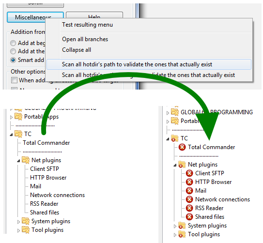
So from there you may either erase the entries since their pointing directory that don't exist anymore or keep them.
Why keeping them? Simple. In a context where Double Commander would be used on a USB memory stick to a computer to another, it might be totally normal to have directories that won't exist on a computer that were existing on the previous one.
But if so, how does the "Scan all hotdir's path to validate the ones that actually exist" function will help you?
It's because by doing this, it will also remove these entries from the Directory Hotlist popup menu from the main panel.
These entries referring to non-existing folder won't be shown!
They won't be erased permanently from the Directory Hotlist internal list.
They will simply not be shown from the popup menu for the session.
See the result of the previous example.

3.6. Adding more than one directory at the time to Directory Hotlist
When setuping your Directory Hotlist for a new situation, it might happen you would like to add many directories at once to the Directory Hotlist.
There are two ways you can do that.
First method: directly from the main frame with the selection
This is easy: you simply select the directories you want to add, you invoke the Directory Hotlist popup menu and you select at the end of it "Add x selected directories".
The directories will be added to the configured addition position.
If you're configured to add via the "smart" method, it's nice to see how well they are placed!
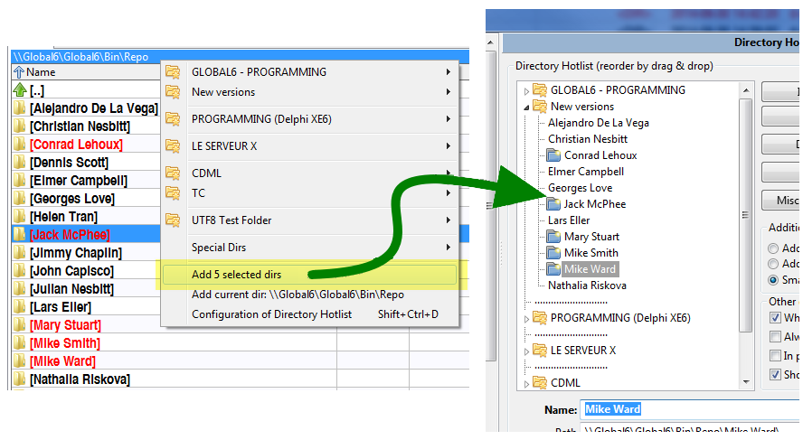
Second method: similar to first one but with the Directory Hotlist configuration window and main panel shown simultaneously
This is also easy: you first invoke the Directory Hotlist configuration window.
Then you place your selection where you want the new directories where you want them to be added.
You then press the "Add" or "Insert" button and click "Current selected or active directories of active frame"
You will see them added or inserted and ready to be sorted, renamed and arranged to your wishes.
3.8. No switch on inactive frame even if target is configured
That one is almost an hidden feature.
As presented in point 2.7 of this page, you might have configured the Directory Hotlist entry to also switch the directory of the inactive frame to switch to a specified target directory.
But sometimes, it might be desirable to don't have the target folder to switch but only the main active frame.
You may avoid this by this little trick: having the "CTRL" key on the keyboard pressed when you click the shortcut in the Directory Hotlist popup menu.
If the "CTRL" key is hold press at the moment you click the shortcut, only the active frame will switch, the target won't.
3.8. Directly configure an entry from popup menu
That one also is almost an hidden feature.
As you are in browsing in the Directory Hotlist popup menu, it happen you see a typo you wish to correct or something that is not organize the way you want.
Certainly you can then click lower to go in the configuration, search in the tree where it was, and then proceed to your correction.
But there is a little trick to do better, quicker and simpler.
While in the Directory Hotlist popup menu, have the "SHIFT" key on the keyboard pressed when you click the menu item where you wish to directly go in the configuration window to configure to your taste.
If the "SHIFT" key is hold press at the moment you click the shortcut, DC will bring you to the configuration screen with the selection ready to be edited to your wish.
You won't have to search for it in the list!
3.9. Show complete path in popup menu
In the Directory Hotlist configuration screen there is a checkbox called "In popup, show[path also]".
This option, when checked, will instruct Double Commander to show directly in the popup entry the complete path where the shortcut is pointing.
So you'll see not only the hotdir name you gave, but it will show also the full path where it will jump if you click.
That one might be annoying since it adds a lot of text on screen and we might be tired to see this.
But in some circumstances, especially with the special dirs regarding the windows defined directories and also the environment variables pointing directories.
It's nice to have a direct overview to where each one is pointing.
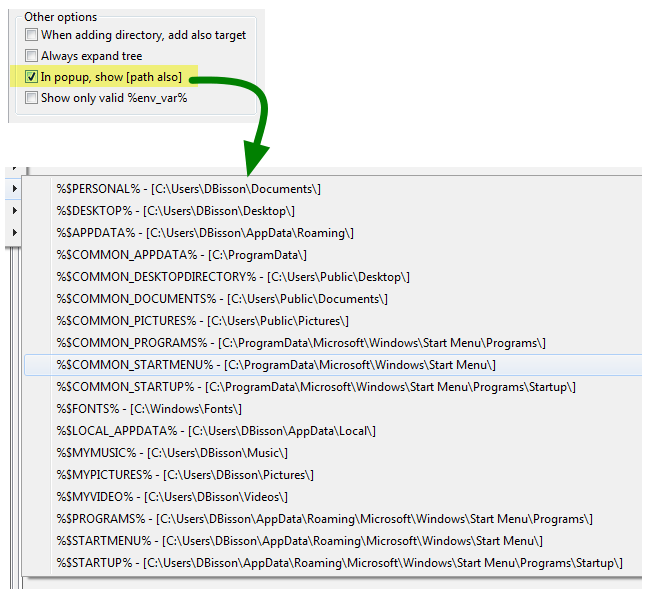
3.10. Keep only environment variables that look like a directory
In the "Special Dirs" section of the Directory Hotlist popup menu, you'll see you can have environment variables.
It's not necessary ALL the variables that are in fact a directory.
In the Directory Hotlist Configuration, you may check the option "Show only valid %env_var%".
When this option is checked, DC will try to eliminate from the menu the environment variable that looks like a valid path, at least for the beginning of it.
It will not necessary search and validate if path is actually present to don't slow down for no real need, but will quickly eliminate the obvious non-pertinent ones.
4. Other functions
There are maybe some other little possibilities and function with the Double Commander Directory Hotlist feature that are present in the application and not describe here.
It's hard (and sometimes annoying even if still necessary) to keep up to date a help file like this.
But certainly you'll figure most of it and this help section at least cover the most important points of the matter.